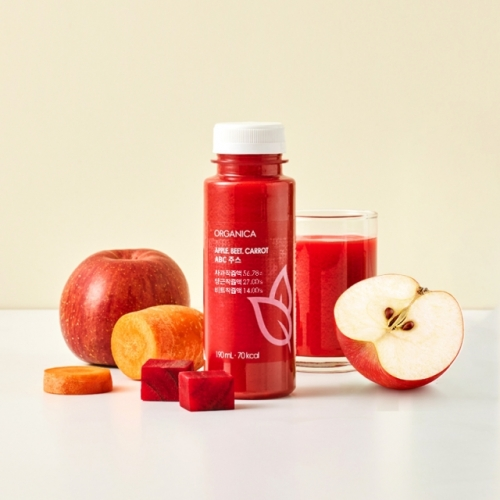

ABC Juice
Apple, Beet, Carrot 갈아서 만든 쥬스
B
Apple
C

사과 속에 식이섬유인 ‘펙틴’이 풍부하게 들어있다.
펙틴은 장을 약산성으로 유지하며
나쁜 균의 증식을 억제하는 데 도움을 준다.
사과에 들어 있는 유기산은
몸 안에 쌓인 피로 물질을 제거해준다.
A
Beet
C
베타시아닌은 발암성 물질의 생성을 억제한다.
베타인 성분은 혈관에 혈전이 쌓이는 것을 방지해준다.
단, 비트는 많이 먹으면 옥살산 성분 때문에
신장에 결석이 생길 수 있으니
하루에 최대 한 개만 먹는 것이 좋다.
A
Beet
C

당근에는 베타카로틴이 풍부하다.
베타카로틴이 몸 안으로 들어가면
비타민 A로 변환되어
시력을 보호하고 야맹증을 예방해준다.
활성산소의 체내 세포 손상을 방지하고
면역력을키워주는 효과가 있다.
Yuja Banana smoothie
유자와 바나나의 조화로운 스무디
Yuja
B

모세혈관을 보호하는 헤스페리딘,
신진대사를 활발하게 하는 구연산,
철 결핍성 빈혈에 도움을 주는 엽산,
칼슘까지 풍부하게 들어 있다.
유자의 쓴맛을 내는 리모넨 성분은
항균·항염 작용을 한다.
Y
Banana
사과에 비해 3배 많은 칼륨은 몸 속 나트륨을
몸 밖으로 배출시키는 효과가 뛰어나므로
혈관 관련 질환을 예방한다.
뇌 활동의 주 에너지원인 포도당, 과당 성분이 풍부해
기억력을 증진시키는 효과가 뛰어나 뇌 건강에 도움을 준다.